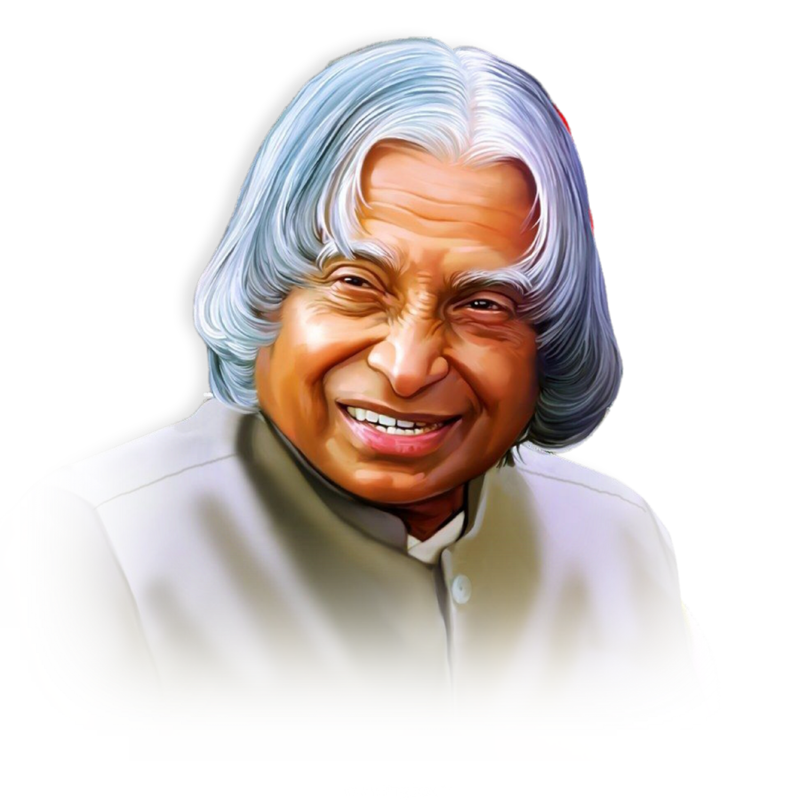

1931-2015
"The best brains of the nation may be found on the last
benches of the classroom."
Dr. Avul Pakir Jainulabdeen Abdul Kalam (1931–2015) was an Indian aerospace scientist, teacher, and statesman who became the 11th President of India (2002–2007). Born in a modest family in Rameswaram, Tamil Nadu, he rose through dedication and hard work to become one of the most respected leaders in modern India. Kalam played a pivotal role in India’s space and missile development programs, earning him the title “Missile Man of India”. He was deeply involved in projects like SLV, Agni, and Prithvi missiles, and contributed to India’s nuclear capabilities.